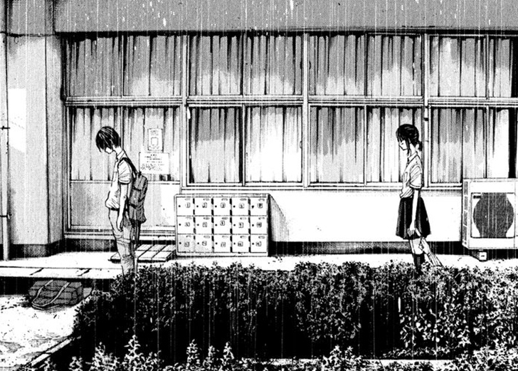

Umibe no Onnanoko
Resumo
Koume Sato e Kosuke Isobe são dois adolescentes que vivem numa pacata cidade litorânea. Depois de ter levado um fora por sua paixão, Koume emocionalmente machucada decide começar uma relação sexual com Kosuke, sem emoções envolvidas. No entanto, ambos descobrem que o sexo sem compromisso levam a complicações inesperadas, não apenas para si, mas também as pessoas que os cercam.